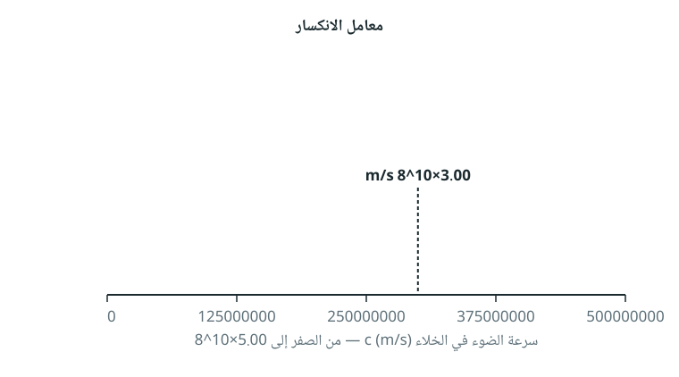

معامل الانكسار
Refractive index
معامل الانكسار هو نسبة سرعة الضوء في الخلاء إلى سرعته في الوسط، ورمزه n، وهو عدد بلا وحدة أكبر من واحد. يحدد انحراف الضوء عند عبور السطوح.
معامل الانكسار لوسط شفاف، ورمزه n، هو نسبة سرعة الضوء في الخلاء إلى سرعة الضوء في ذلك الوسط. وهو عدد بلا وحدة، ولا يقلّ عن واحد لأن الضوء لا يسبق سرعته في الخلاء. ويحكم انحراف الضوء عند عبور سطح فاصل بين وسطين بحسب قانون سنل: حاصل ضرب معامل الانكسار في جيب زاوية السقوط ثابت عبر السطح. وهو أيضاً يحدد الزاوية الحرجة للانعكاس الكلي الداخلي، وهي أساس الألياف البصرية. ويعتمد على الطول الموجي، وهذا الاعتماد هو التشتت الذي يفصل الضوء الأبيض في المنشور. مثال: الماء معامل انكساره 1.333 عند الطول الموجي 589 nm، فالضوء يسير فيه بسرعة 299 792 458/1.333 = 2.249×10⁸ m/s.
كيف تعمل الظاهرة؟
معامل الانكسار ينشأ من استجابة إلكترونات الوسط للمجال الكهربائي المتذبذب للضوء. حين يمرّ الضوء، تدفع إلكترونات الذرات إلى التذبذب، فتُشعّ مجالاً ثانوياً يتأخر في الطور عن المجال الأصلي. تراكب المجالين يُنتج موجة محصلة تسير أبطأ من الموجة الأصلية، بلا أن يمتص الوسط طاقة. هذا التباطؤ الظاهري هو ما يقيسه معامل الانكسار. ولأن استجابة الإلكترونات تعتمد على قرب تردد الضوء من تردداتها الطبيعية، يعتمد n على الطول الموجي، وهو أصل التشتت الذي يفصل الألوان في المنشور.
العلاقة بالأرقام
n = c/v بلا وحدة. وقانون سنل n₁·sinθ₁ = n₂·sinθ₂. والزاوية الحرجة sinθ_c = n₂/n₁. وسرعة الضوء في الوسط v = c/n. والطول الموجي في الوسط λ = λ₀/n. مثال عددي: الماء n = 1.333: v = 299 792 458/1.333 = 2.249×10⁸ m/s؛ وضوء طوله 589 nm في الهواء يصير 441.9 nm في الماء. وسقوط بزاوية 45° من الهواء: sinθ₂ = 0.7071/1.333 = 0.5305، θ₂ = 32.0°. والزاوية الحرجة 48.6°.
مفاهيم متقاربة
معامل الانكسار ليس الكثافة ولا الوزن النوعي: الكحول أقل كثافة من الماء وأعلى معاملاً. وليس الامتصاص ولا النفاذية. وليس التشتت، فالتشتت هو dn/dλ. والخطأ الشائع أن يُقال إن الضوء «ينحني» داخل الوسط المتجانس؛ لا ينحني إلا عند تغيّر n، وفي وسط متجانس يسير مستقيماً بسرعة أقل. وأخيراً معامل الانكسار ليس خاصية ثابتة للمادة، بل دالة في الطول الموجي والحرارة والضغط.
حدود التطبيق
معامل الانكسار وحده لا يصف الوسط بلا تحديد الطول الموجي والحرارة، فالقيم المنشورة تُنسب إلى خط صوديوم 589 nm عند 20 °م عادةً. وفي الأوساط المشتتة كالضباب والمعلّقات، لا يُستعمل معامل انكسار واحد بل معامل فعّال. وفي المواد الماصة بقوة يصير معامل الانكسار عدداً مركّباً بجزء تخيّلي، فلا يصلح القانون البسيط. ولا يُستعمل معامل الانكسار للتنبؤ بالصلابة أو التوصيل، فهو خاصية بصرية لا ميكانيكية.

| الكمية | القيمة | المصدر |
|---|---|---|
| سرعة الضوء في الخلاء c | 299 792 458 m/s | [1] |
المصادر
- 1 CODATA Value: speed of light in vacuum — NIST — CODATA 2022 recommended values (2024). physics.nist.gov/cgi-bin/cuu/Value?c · اطُّلع عليه 2026-11-21
- 2 CODATA Value: Planck constant — NIST — CODATA 2022 recommended values (2024). physics.nist.gov/cgi-bin/cuu/Value?h · اطُّلع عليه 2026-11-21
- 3 CODATA Value: elementary charge — NIST — CODATA 2022 recommended values (2024). physics.nist.gov/cgi-bin/cuu/Value?e · اطُّلع عليه 2026-11-21
استشهد بهذا المصطلح
الصيغتان مبنيتان من بيانات الصفحة نفسها: العنوان والتاريخ ورابط النسخة المنشورة.
معامل الانكسار — Refractive index. (2026). ديوان المعرفة — انفراد. https://infiradev.com/diwan/terms/term-refractive-index.html
@misc{term-refractive-index2026,
title = {معامل الانكسار},
titleaddon = {Refractive index},
howpublished = {{ديوان المعرفة — انفراد} — مرجع علمي عربي},
year = {2026},
url = {https://infiradev.com/diwan/terms/term-refractive-index.html},
urldate = {2026-11-26},
note = {مراجعة علمية: hermes (مراجعة معتمدة 2026-11-26)}
}
راجعه: hermes (مراجعة معتمدة 2026-11-26) · 2026-11-26 · آخر تحديث 2026-11-21